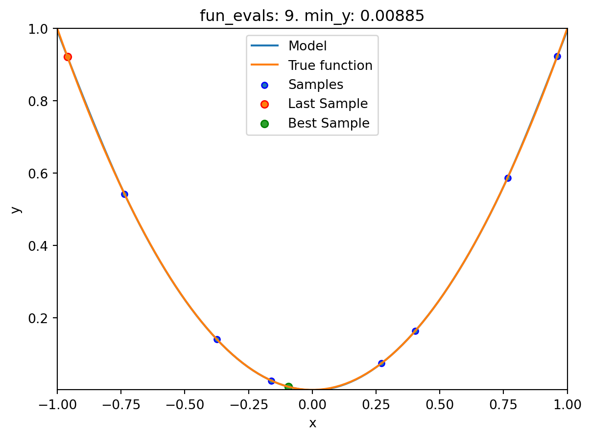
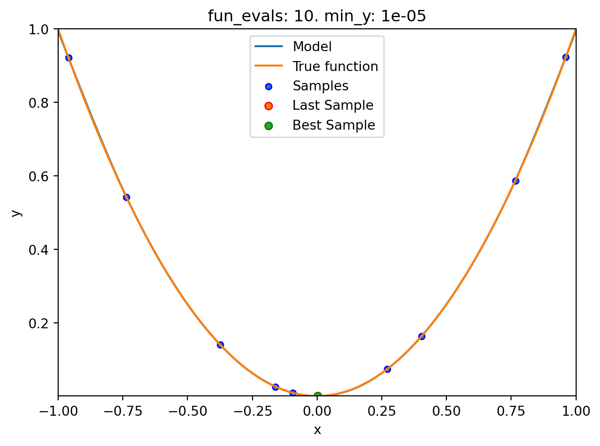

import numpy as np
from math import inf
from spotPython.fun.objectivefunctions import analytical
from spotPython.utils.init import fun_control_init, design_control_init
from spotPython.hyperparameters.values import set_control_key_value
from spotPython.spot import spot
import matplotlib.pyplot as plt7 Introduction to spotPython
Surrogate model based optimization methods are common approaches in simulation and optimization. SPOT was developed because there is a great need for sound statistical analysis of simulation and optimization algorithms. SPOT includes methods for tuning based on classical regression and analysis of variance techniques. It presents tree-based models such as classification and regression trees and random forests as well as Bayesian optimization (Gaussian process models, also known as Kriging). Combinations of different meta-modeling approaches are possible. SPOT comes with a sophisticated surrogate model based optimization method, that can handle discrete and continuous inputs. Furthermore, any model implemented in scikit-learn can be used out-of-the-box as a surrogate in spotPython.
SPOT implements key techniques such as exploratory fitness landscape analysis and sensitivity analysis. It can be used to understand the performance of various algorithms, while simultaneously giving insights into their algorithmic behavior.
The spot loop consists of the following steps:
- Init: Build initial design \(X\)
- Evaluate initial design on real objective \(f\): \(y = f(X)\)
- Build surrogate: \(S = S(X,y)\)
- Optimize on surrogate: \(X_0 = \text{optimize}(S)\)
- Evaluate on real objective: \(y_0 = f(X_0)\)
- Impute (Infill) new points: \(X = X \cup X_0\), \(y = y \cup y_0\).
- Goto 3.
Central Idea: Evaluation of the surrogate model S is much cheaper (or / and much faster) than running the real-world experiment \(f\). We start with a small example.
7.1 Example: Spot and the Sphere Function
7.1.1 The Objective Function: Sphere
The spotPython package provides several classes of objective functions. We will use an analytical objective function, i.e., a function that can be described by a (closed) formula: \[
f(x) = x^2
\]
fun = analytical().fun_sphereWe can apply the function fun to input values and plot the result:
x = np.linspace(-1,1,100).reshape(-1,1)
y = fun(x)
plt.figure()
plt.plot(x, y, "k")
plt.show()
7.1.2 The Spot Method as an Optimization Algorithm Using a Surrogate Model
We initialize the fun_control dictionary. The fun_control dictionary contains the parameters for the objective function. The fun_control dictionary is passed to the Spot method.
fun_control=fun_control_init(lower = np.array([-1]),
upper = np.array([1]))
spot_0 = spot.Spot(fun=fun,
fun_control=fun_control)
spot_0.run()spotPython tuning: 1.2026789271012512e-09 [#######---] 73.33%
spotPython tuning: 1.2026789271012512e-09 [########--] 80.00%
spotPython tuning: 1.2026789271012512e-09 [#########-] 86.67%
spotPython tuning: 1.2026789271012512e-09 [#########-] 93.33%
spotPython tuning: 3.7010904275056666e-10 [##########] 100.00% Done...
<spotPython.spot.spot.Spot at 0x3b04dbb50>The method print_results() prints the results, i.e., the best objective function value (“min y”) and the corresponding input value (“x0”).
spot_0.print_results()min y: 3.7010904275056666e-10
x0: 1.9238218284201025e-05[['x0', 1.9238218284201025e-05]]To plot the search progress, the method plot_progress() can be used. The parameter log_y is used to plot the objective function values on a logarithmic scale.
spot_0.plot_progress(log_y=True)
Spot method. The black elements (points and line) represent the initial design, before the surrogate is build. The red elements represent the search on the surrogate.
If the dimension of the input space is one, the method plot_model() can be used to visualize the model and the underlying objective function values.
spot_0.plot_model()7.2 Spot Parameters: fun_evals, init_size and show_models
We will modify three parameters:
- The number of function evaluations (
fun_evals) will be set to10(instead of 15, which is the default value) in thefun_controldictionary. - The parameter
show_models, which visualizes the search process for each single iteration for 1-dim functions, in thefun_controldictionary. - The size of the initial design (
init_size) in thedesign_controldictionary.
The full list of the Spot parameters is shown in code reference on GitHub, see Spot.
fun_control=fun_control_init(lower = np.array([-1]),
upper = np.array([1]),
fun_evals = 10,
show_models = True)
design_control = design_control_init(init_size=9)
spot_1 = spot.Spot(fun=fun,
fun_control=fun_control,
design_control=design_control)
spot_1.run()

spotPython tuning: 1.2031167009156832e-09 [##########] 100.00% Done...
7.3 Print the Results
spot_1.print_results()min y: 1.2031167009156832e-09
x0: -3.468597268227724e-05[['x0', -3.468597268227724e-05]]7.4 Show the Progress
spot_1.plot_progress()7.5 Visualizing the Optimization and Hyperparameter Tuning Process with TensorBoard
spotPython supports the visualization of the hyperparameter tuning process with TensorBoard. The following example shows how to use TensorBoard with spotPython.
First, we define an “PREFIX” to identify the hyperparameter tuning process. The PREFIX is used to create a directory for the TensorBoard files.
fun_control = fun_control_init(
PREFIX = "01",
lower = np.array([-1]),
upper = np.array([2]))
design_control = design_control_init(init_size=5)Created spot_tensorboard_path: runs/spot_logs/01_maans14_2024-06-08_21-57-23 for SummaryWriter()Since the PREFIX is not None, spotPython will log the optimization process in the TensorBoard files.
spot_tuner = spot.Spot(fun=fun,
fun_control=fun_control,
design_control=design_control)
spot_tuner.run()
spot_tuner.print_results()spotPython tuning: 2.7705278094872058e-05 [####------] 40.00%
spotPython tuning: 8.061545220547415e-07 [#####-----] 46.67%
spotPython tuning: 7.385022589686283e-07 [#####-----] 53.33%
spotPython tuning: 3.677917685242894e-07 [######----] 60.00%
spotPython tuning: 4.911502304103013e-09 [#######---] 66.67%
spotPython tuning: 4.911502304103013e-09 [#######---] 73.33%
spotPython tuning: 4.911502304103013e-09 [########--] 80.00%
spotPython tuning: 4.911502304103013e-09 [#########-] 86.67%
spotPython tuning: 4.911502304103013e-09 [#########-] 93.33%
spotPython tuning: 4.911502304103013e-09 [##########] 100.00% Done...
min y: 4.911502304103013e-09
x0: -7.008211115615035e-05[['x0', -7.008211115615035e-05]]Now we can start TensorBoard in the background. The TensorBoard process will read the TensorBoard files and visualize the hyperparameter tuning process. From the terminal, we can start TensorBoard with the following command:
tensorboard --logdir="./runs"logdir is the directory where the TensorBoard files are stored. In our case, the TensorBoard files are stored in the directory ./runs.
TensorBoard will start a web server on port 6006. We can access the TensorBoard web server with the following URL:
http://localhost:6006/The first TensorBoard visualization shows the objective function values plotted against the wall time. The wall time is the time that has passed since the start of the hyperparameter tuning process. The five initial design points are shown in the upper left region of the plot. The line visualizes the optimization process.
The second TensorBoard visualization shows the input values, i.e., \(x_0\), plotted against the wall time.
The third TensorBoard plot illustrates how spotPython can be used as a microscope for the internal mechanisms of the surrogate-based optimization process. Here, one important parameter, the learning rate \(\theta\) of the Kriging surrogate is plotted against the number of optimization steps.
7.6 Jupyter Notebook
Note
- The Jupyter-Notebook of this lecture is available on GitHub in the Hyperparameter-Tuning-Cookbook Repository